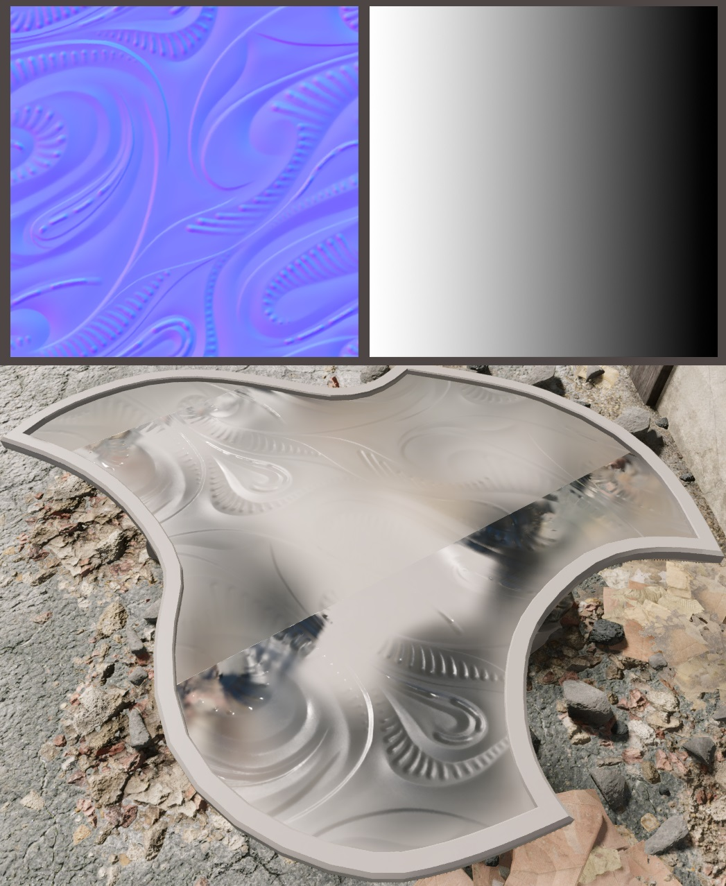
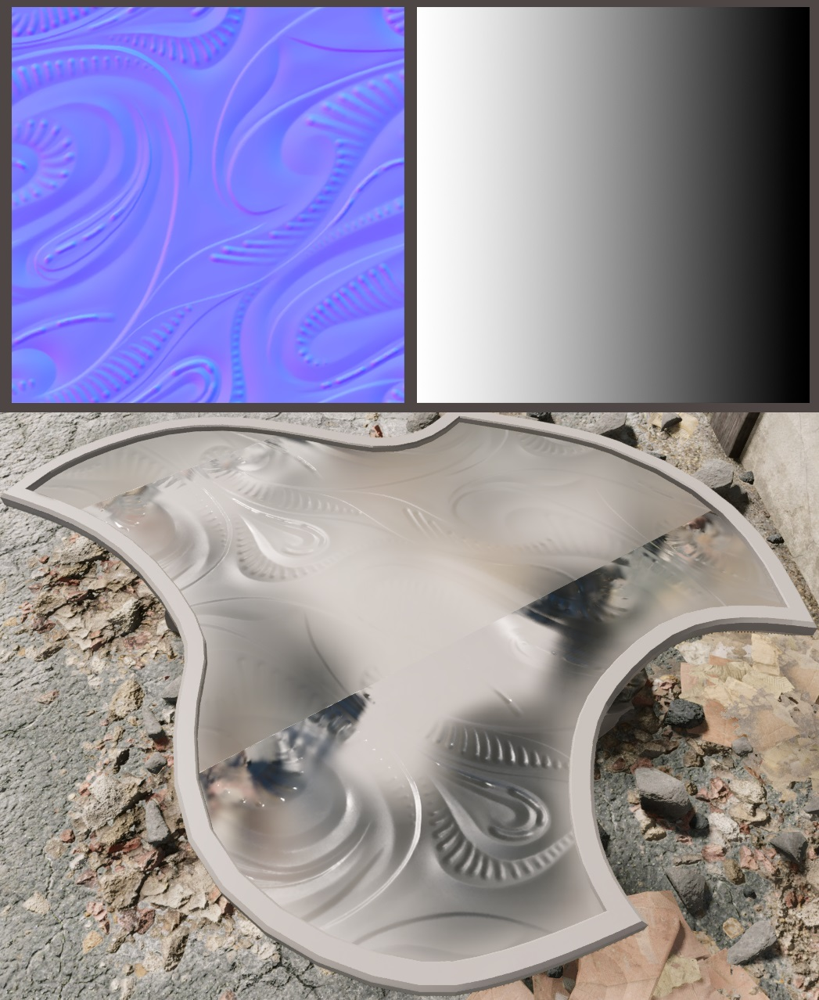

rendinst_refraction
Overview
This shader is designed for glass surfaces with a refraction effect.
It’s a computationally expensive shader with several limitations, so use it carefully.
Z-Buffer limitation: When several assets with this shader overlaps, shader can’t sort them properly – drawing order of polygons may be incorrect, and geometry that closer to the camera may appear further away, and vise versa. Overlapping polygons also do not refract properly.
Screen-space limitation: Shader affects whole rendered image, no matter if geometry is behind the refractive surface or in front of it. So, for example, weapon and character’s hands would be refracted as well, so it’s better not to use way too strong parallax effect to make such limitation less noticeable.
Recommendations:
Apply this shader to individual objects within enclosed spaces.
Position objects carefully to avoid overlap in the frame, as this shader isn’t ideal for scenes with layered glass effects (e.g., a “crystal palace” setting).
If using glass walls or doors, use them sparingly, and plan the layout to avoid sightlines through multiple glass objects in succession.
Textures
_tex_d.tif
RGB – Glass color
A – Opacity map
_tex_n.tif
RG – Normals for reflections and parallax shift direction
B – Height map for parallax
A – Smoothness map, which also controls the blur of objects behind the glass
Parameters
script:t="isShell=1"– Refraction strength at sharp anglesscript:t="max_thickness=0.5"– Maximum parallax thicknessscript:t="min_thickness=0.01"– Minimum parallax thicknessscript:t="is_window=1"– Parameter for window glass
Albedo and Opacity Maps
Note
The glass color works as a multiplier, meaning the color also influences transparency.
{kind=link}
{kind=link}
{kind=link}
{kind=link}
Normals Map and Smoothness
The normals map modifies the glass surface, affecting both the strength of the parallax (vertically and horizontally) and the reflections.
Smoothness also alters the surface properties. As the reflection width changes, so does the blurring strength of the refracted image (objects behind the surface).
 

{kind=link}
Height Map
The height map defines the parallax strength in the depth of the surface. It’s
best practice to bake the depth range from 0 to 255. Parallax strength is
controlled separately through shader parameters.
Both illustrations feature parallax based on the normals map. In the second one, the height map adds more noticeable depth, especially at sharper angles.
Note
The height map doesn’t have to correspond exactly to the normals map. You can add additional elements to the height map for more diverse parallax effects, while keeping the normals smooth, simulating unevenness on the back side of the glass rather than the front.
{kind=link}
{kind=link}
Thickness
This parameter defines the depth of the glass refraction. The greater the depth and the larger the difference between the minimum and maximum heights, the stronger the refraction effect.
Note
The refraction will also affect objects positioned between the surface and the camera – such as weapons or character hands. The stronger the refraction, the more noticeable the effect becomes.
script:t="max_thickness=0.001" |
script:t="max_thickness=1" |
script:t="max_thickness=5" |
|---|
{kind=link}
{kind=link}
{kind=link}
isShell Parameter
The isShell parameter controls the parallax depth strength at sharper angles.
For flat surfaces like door, glass or tabletops, set isShell=0. For curved
surfaces such as bulbs, bottles, or jars, set isShell=1. While intermediate
values are possible, note that they do not reflect physical accuracy.
Additionally, increasing parallax strength will make objects between the surface
and the camera more prominent in the refraction effect.
script:t="max_thickness=0.001" |
script:t="max_thickness=1" |
script:t="max_thickness=5" |
|---|
{kind=link}
{kind=link}
{kind=link}
is_window Parameter
The is_window parameter is common across most glass shaders but is disabled by
default in this shader:
script:t="is_window=0"
Enable this parameter for glass positioned at the boundary of an envi_probe,
where it needs to reflect two environments – indoor reflections (captured by the
enviro-probe) on one side and outdoor reflections on the other.
For objects used exclusively indoors or outdoors, such as glassware, lantern covers, or car windows, keep this parameter disabled.
Example
In the archive below, you can find a model example, textures, high-poly assets,
and a .psd file containing various maps: Download
Example.